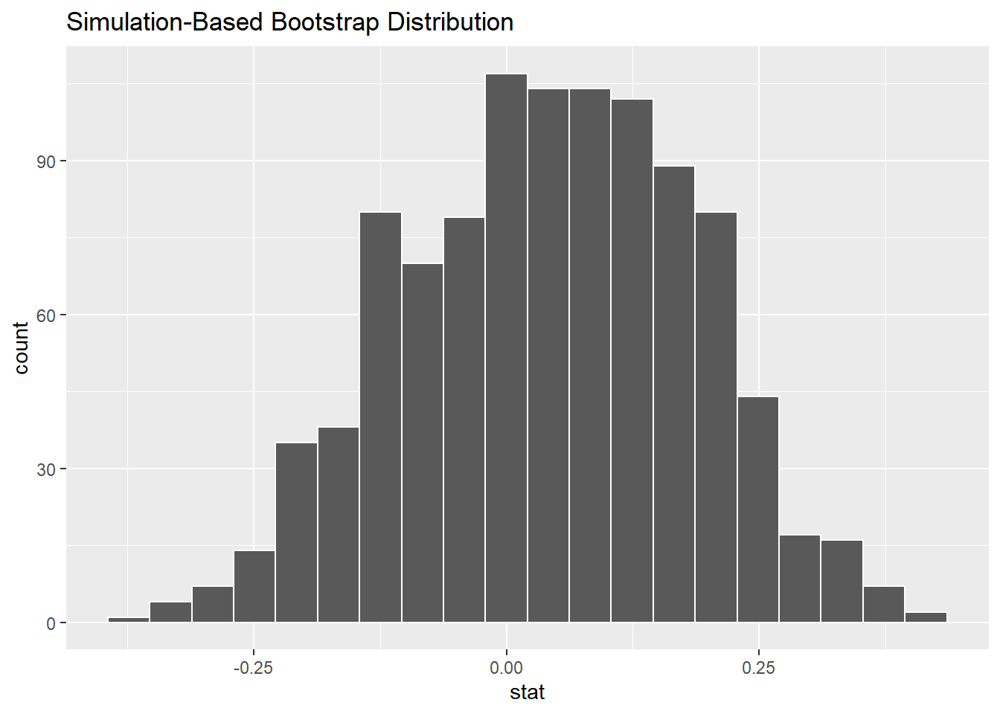

Comparing two proportions
| Scenario | Population parameter | Population Notation | Point estimate/sample statistic | Sample Notation |
|---|---|---|---|---|
| 1 | Population proportion | \(p\) | Sample proportion | \(\widehat{p}\) |
| 2 | Population mean | \(\mu\) | Sample mean | \(\overline{x}\) |
| 3 | Difference in population proportions | \(p_1 - p_2\) | Difference in sample proportions | \(\widehat{p}_1 - \widehat{p}_2\) |
| 4 | Difference in population means | \(\mu_1 - \mu_2\) | Difference in sample means | \(\overline{x}_1 - \overline{x}_2\) |
| 5 | Population regression intercept | \(\beta_0\) | Sample regression intercept | \(\widehat{\beta}_0\) or \(b_0\) |
| 6 | Population regression slope | \(\beta_1\) | Sample regression slope | \(\widehat{\beta}_1\) or \(b_1\) |
In the previous sections we have considered Scenario 2 in Table 1 (reproduced here), i.e. constructing a confidence interval for a single population mean. Often, however, interest lies in comparing two populations, e.g. by constructing a confidence interval for the difference in the population means, as in Scenario 4. But it may be that the characteristic of interest is a population proportion (rather than a population mean) which is reflected in Scenarios 1 and 3. In this section we will focus on Scenario 3, i.e. constructing a confidence interval for the difference in two population proportions.
Let's start with an example. If you see someone else yawn, are you more likely to yawn? In an episode of the TV show Mythbusters, they tested the myth that yawning is contagious.
Fifty adults who thought they were being considered for an appearance on the show were interviewed by a show recruiter ("confederate") who either yawned or did not. Participants then sat by themselves in a large van and were asked to wait. While in the van, the Mythbusters watched via hidden camera to see if the unaware participants yawned. The data frame containing the results is available at mythbusters_yawn in the moderndive package. Let's check it out.
mythbusters_yawn# A tibble: 50 x 3
subj group yawn
<int> <chr> <chr>
1 1 seed yes
2 2 control yes
3 3 seed no
4 4 seed yes
5 5 seed no
6 6 control no
7 7 seed yes
8 8 control no
9 9 control no
10 10 seed no
# ... with 40 more rows
# i Use `print(n = ...)` to see more rows- The participant ID is stored in the
subjvariable with values of 1 to 50. - The
groupvariable is either"seed"for when a confederate was trying to influence the participant or"control"if a confederate did not interact with the participant. - The
yawnvariable is either"yes"if the participant yawned or"no"if the participant did not yawn.
We can use the janitor package to get a glimpse into this data in a table format:
mythbusters_yawn %>%
tabyl(group, yawn) %>%
adorn_percentages() %>%
adorn_pct_formatting() %>%
adorn_ns() # To show original counts group no yes
control 75.0% (12) 25.0% (4)
seed 70.6% (24) 29.4% (10)We are interested in comparing the proportion of those that yawned after seeing a seed versus those that yawned with no seed interaction (i.e. control). We'd like to see if the difference between these two proportions is significantly larger than 0. If so, we'd have evidence to support the claim that yawning is contagious based on this study.
In looking over this problem, we can take note of some important details to include in our infer pipeline:
- We are calling a "
success" having ayawnvalue ofyes. - Our response variable will always correspond to the variable used in the
successso the response variable isyawn. - The explanatory variable is the other variable of interest here:
group.
Compute the point estimate
We are examining the relationship between yawning and whether or not the participant saw someone yawn (seed) or not (control).
mythbusters_yawn %>%
specify(formula = yawn ~ group)Error: A level of the response variable `yawn` needs to be specified for the `success` argument in `specify()`.Note that the success argument must be specified in situations such as this where the response variable has only two levels.
mythbusters_yawn %>%
specify(formula = yawn ~ group, success = "yes")Response: yawn (factor)
Explanatory: group (factor)
# A tibble: 50 x 2
yawn group
<fct> <fct>
1 yes seed
2 yes control
3 no seed
4 yes seed
5 no seed
6 no control
7 yes seed
8 no control
9 no control
10 no seed
# ... with 40 more rows
# i Use `print(n = ...)` to see more rowsWe next want to calculate the statistic of interest for our sample. This corresponds to the difference in the proportion of successes.
mythbusters_yawn %>%
specify(formula = yawn ~ group, success = "yes") %>%
calculate(stat = "diff in props")Warning: The statistic is based on a difference or ratio; by default, for
difference-based statistics, the explanatory variable is subtracted in the
order "control" - "seed", or divided in the order "control" / "seed" for ratio-
based statistics. To specify this order yourself, supply `order = c("control",
"seed")` to the calculate() function.Response: yawn (factor)
Explanatory: group (factor)
# A tibble: 1 x 1
stat
<dbl>
1 -0.0441We see another error here. To further check to make sure that R knows exactly what we are after, we need to provide the order in which R should subtract these proportions of successes. As the error message states, we'll want to put "seed" first after c() and then "control": order = c("seed", "control"). Our point estimate is thus calculated:
obs_diff <- mythbusters_yawn %>%
specify(formula = yawn ~ group, success = "yes") %>%
calculate(stat = "diff in props", order = c("seed", "control"))
obs_diffResponse: yawn (factor)
Explanatory: group (factor)
# A tibble: 1 x 1
stat
<dbl>
1 0.0441This value represents the proportion of those that yawned after seeing a seed yawn (0.2941) minus the proportion of those that yawned with not seeing a seed (0.25).
Bootstrap distribution
Our next step in building a confidence interval is to create a bootstrap distribution of statistics (differences in proportions of successes). We saw how it works with a single variable in computing bootstrap means in the pennies example but we haven't yet worked with bootstrapping involving multiple variables, i.e. comparing two groups.
In the infer package, bootstrapping with multiple variables means that each row is potentially resampled. Let's investigate this by looking at the first few rows of mythbusters_yawn:
head(mythbusters_yawn)# A tibble: 6 x 3
subj group yawn
<int> <chr> <chr>
1 1 seed yes
2 2 control yes
3 3 seed no
4 4 seed yes
5 5 seed no
6 6 control no When we bootstrap this data, we are potentially pulling the subject's readings multiple times. Thus, we could see the entries of "seed" for group and "no" for yawn together in a new row in a bootstrap sample. This is further seen by exploring the sample_n() function in dplyr on this smaller 6 row data frame comprised of head(mythbusters_yawn). The sample_n() function can perform this bootstrapping procedure and is similar to the rep_sample_n() function in infer, except that it is not repeated but rather only performs one sample with or without replacement.
head(mythbusters_yawn) %>%
sample_n(size = 6, replace = TRUE)# A tibble: 6 x 3
subj group yawn
<int> <chr> <chr>
1 1 seed yes
2 5 seed no
3 2 control yes
4 5 seed no
5 5 seed no
6 1 seed yes We can see that in this bootstrap sample generated from the first six rows of mythbusters_yawn, we have some rows repeated. The same is true when we perform the generate() step in infer as done below.
bootstrap_distribution <- mythbusters_yawn %>%
specify(formula = yawn ~ group, success = "yes") %>%
generate(reps = 1000) %>%
calculate(stat = "diff in props", order = c("seed", "control"))Response: yawn (factor)
Explanatory: group (factor)
# A tibble: 1,000 x 2
replicate stat
<int> <dbl>
1 1 0.110
2 2 -0.143
3 3 -0.0167
4 4 0.280
5 5 0.128
6 6 -0.0903
7 7 0.144
8 8 -0.0381
9 9 0.0286
10 10 -0.225
# ... with 990 more rows
# i Use `print(n = ...)` to see more rowsbootstrap_distribution %>%
visualize(bins = 20)
This distribution is roughly symmetric and bell-shaped but isn't quite there. Let's use the percentile-based method to compute a 95% confidence interval for the true difference in the proportion of those that yawn with and without a seed presented. The arguments are explicitly listed here but remember they are the defaults and simply get_ci() can be used.
bootstrap_distribution %>%
get_ci(type = "percentile", level = 0.95)# A tibble: 1 x 2
lower_ci upper_ci
<dbl> <dbl>
1 -0.237 0.309Therefore, we are not sure which proportion is larger. Some of the bootstrap statistics showed the proportion without a seed to be higher and others showed the proportion with a seed to be higher. If the confidence interval was entirely above zero, we would be relatively sure (about "95% confident") that the seed group had a higher proportion of yawning than the control group.
Note that this all relates to the importance of denoting the order argument in the calculate() function. Since we specified "seed" and then "control" positive values for the statistic correspond to the "seed" proportion being higher, whereas negative values correspond to the "control" group being higher.
We, therefore, have evidence via this confidence interval suggesting that the conclusion from the Mythbusters show that "yawning is contagious" being "confirmed" is not statistically correct.